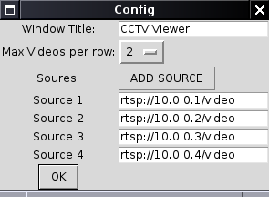

NATHAN242's Projects
Projects
Tools
Project repo: LINK
A simple multi-source video stream viewer based on VLC.
I originally created this as a CCTV camera viewer but it can show streams from any VLC compatible URL.
Configuration is read from the config file on startup. There you can define the window title, number of videos per row and each video source.
# Window title window_title = CCTV Viewer # How many videos per row max_vids_x = 2 source-1 = rtsp://10.0.0.1/stream source-2 = rtsp://10.0.0.2/stream source-3 = rtsp://10.0.0.3/stream source-4 = rtsp://10.0.0.4/stream #source-5 = # etc...
You can also set the configuration at the start of the program although changes will not be saved back to the config file.
